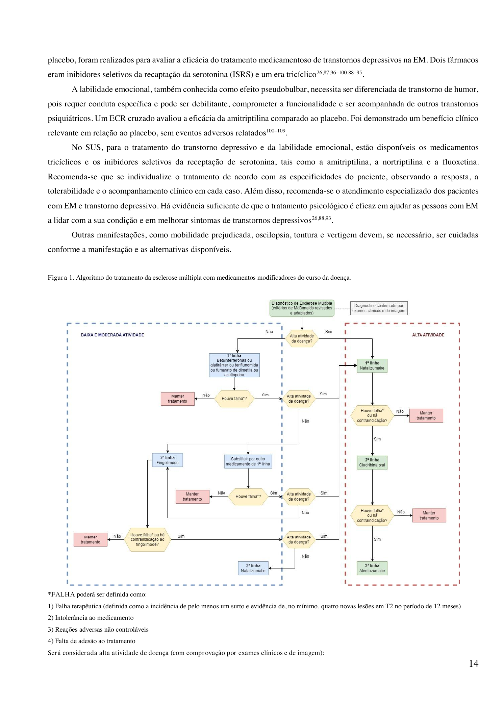

Surto, sequela e PCDT SUS
Ao final: corticoide no surto · sequela = alta atividade · PCDT · tríade de fechamento.
Corticoide no surto
Foco de tratamento: forma remitente-recorrente. No surto, o grande medicamento é corticoide. Exemplo clássico: metilprednisolona 1 g por 3 a 5 dias (via endovenosa). Pode-se fazer corticoide oral (ex.: prednisona) — muitos serviços fazem; a evidência é menor, mas é possível.
Plasmaférese
Alternativa ao corticoide no surto: plasmaférese.
Baixa vs alta atividade
Para manutenção (evitar novos surtos): drogas modificadoras de doença.
| Atividade | Exemplos | Perfil |
|---|---|---|
| Baixa | interferon, glatiramer | 1ª linha: mais seguros, mais tempo de uso, mais fracos |
| Alta | natalizumabe, cladribina, alentuzumabe | “tiro de canhão” |
Sequela = alta
Critério simplificado de alta atividade (para não se perder em critérios longos): a palavrinha sequela. Sequela = fez o surto, tratou com corticoide e não melhorou completamente — deixou sequela residual. Surto + corticoide sem recuperação completa → classificar como alta atividade e ir para terapia mais forte (ex.: natalizumabe).
PCDT SUS + tríade de fecho
Isso aparece em prova porque existe PCDT do SUS (Protocolo Clínico e Diretrizes Terapêuticas) para esclerose múltipla. O SUS tem programa para EM: o paciente cadastra e recebe o medicamento — sem precisar judicializar.
Tríade de fechamento
- Mulher jovem + visão = EM até provar o contrário
- Tempo + espaço (McDonald + RM)
- Surto = corticoide; sequela = alta atividade (+ PCDT SUS existe)
Não confunda: sequela (surto tratado sem recuperação completa) é o gatilho para escalar para modificadora de alta potência. A 1ª linha (interferon, glatiramer) não é a resposta quando há sequela.

Ministério da Saúde (Brasil), PCDT Esclerose Múltipla · domínio público (ato oficial) · gov.br/saude
O programa existe
O fluxograma oficial do SUS organiza tratamento de surto e manutenção. Saber que o PCDT existe é ponto de prova — e muda a vida do paciente, que não precisa judicializar para acessar a modificadora.
Fronteira [156] · fonte-trunca
A fala da fonte encerra sem caso 3 e sem fechamento de série adicional. Nada inventado aqui — a estação fm2 termina com a tríade e o PCDT.
Fim da estação fm2 — a matriz de fraqueza e a voz “mulher jovem + visão” ficam hidratadas para a trilha neuromuscular.
Quiz
Q1. Esquema clássico de corticoide no surto (desta fonte):
Gabarito: B. Metilprednisolona 1 g IV por 3–5 dias é a âncora de surto.
(A) dose/baixa via erradas. (C) dipirona não trata surto. (D) glatiramer é manutenção, não surto.
Q2. Critério simplificado de alta atividade aqui:
Gabarito: B. Sequela (surto tratado sem recuperação completa) é o gatilho para classificar alta atividade e escalar terapia.
(A) formigamento não é critério. (C) idade não define. (D) LCR positivo não é o critério simplificado.
Q3. Sobre o SUS/PCDT na EM:
Gabarito: B. O PCDT do SUS existe: o paciente cadastra e recebe sem judicializar.
(A) há programa. (C) não é só progressiva. (D) PCDT é tratamento, não substitui RM no diagnóstico.
Por que se cai na A: erro mental “modificadora = surto” ou achar que só judicializa.